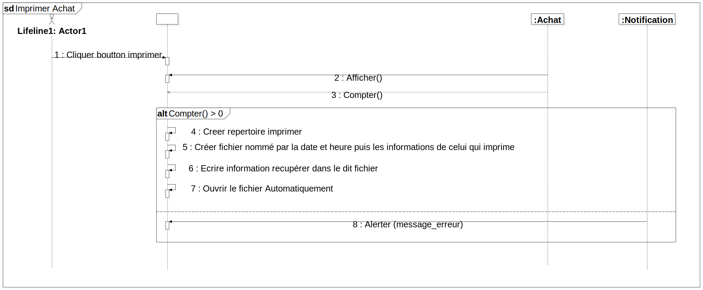

Interaction1
UMLInteraction
Untitled
::
Collaboration17
::
Interaction1
Description
none
Diagrams

Imprimer Achat
Fragments
Compter() > 0
Participants
Lifeline1: Actor1
(Lifeline)
:Achat
:Notification
Messages
Cliquer boutton imprimer (Lifeline1→)
Afficher() (:Achat→)
Compter() (:Achat→)
Creer repertoire imprimer (→)
Créer fichier nommé par la date et heure puis les informations de celui qui imprime (→)
Ecrire information recupérer dans le dit fichier (→)
Ouvrir le fichier Automatiquement (→)
Alerter (:Notification→)
Properties
Name
Value
name
Interaction1
stereotype
null
visibility
public
isReentrant
true
Owned Elements
Imprimer Achat